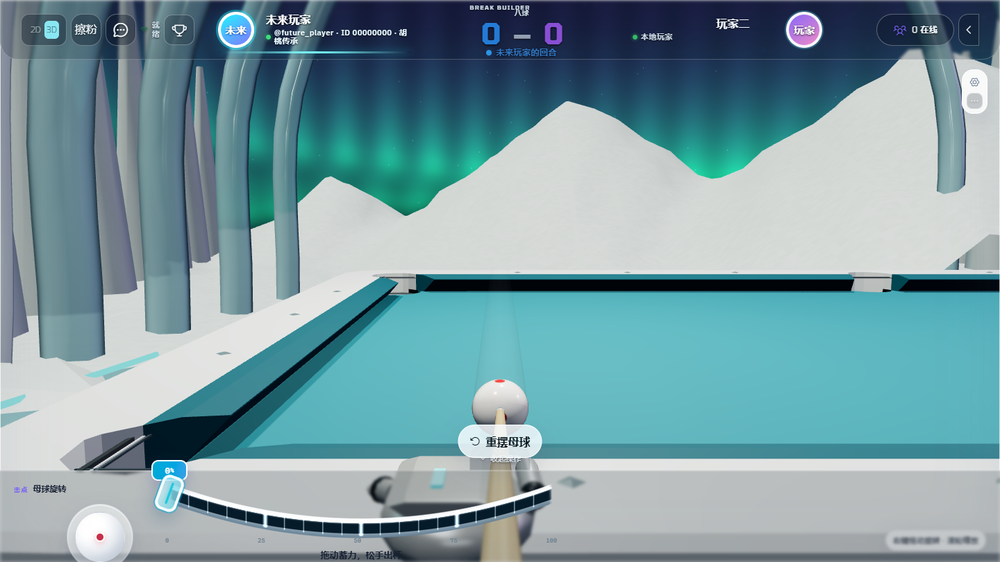
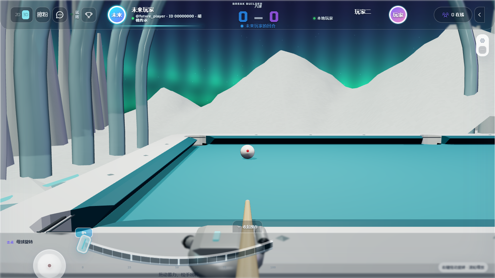
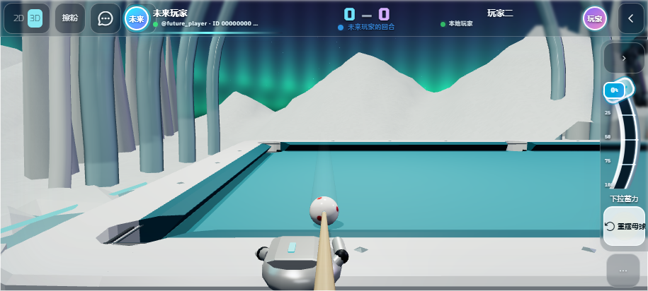

库边也能看清母球与球杆
2026-09-06 · 实际 WebGL 截图。瞄准眼位对齐母球与出杆轴线，避免沿用库边脚位导致镜头越过母球。出杆停留 1 秒后起身，等待新方向稳定时保持站立。

桌面端库边瞄准：母球与杆头保持在画面下半部。

击球后保持原视角，球杆仍可见，母球开始向前运动。

915 × 412 手机横屏触控模拟；另验证了触控拉条出杆。
手机横屏出杆后的停留画面。
835 项单元测试、16 项浏览器回归通过。覆盖 9 组球位与角度，以及 30 / 60 / 120 FPS 的停留和站立流程。尚未进行手机真机验收。
桌面采样 · 触控采样 · 线上资源核验 · 发布记录